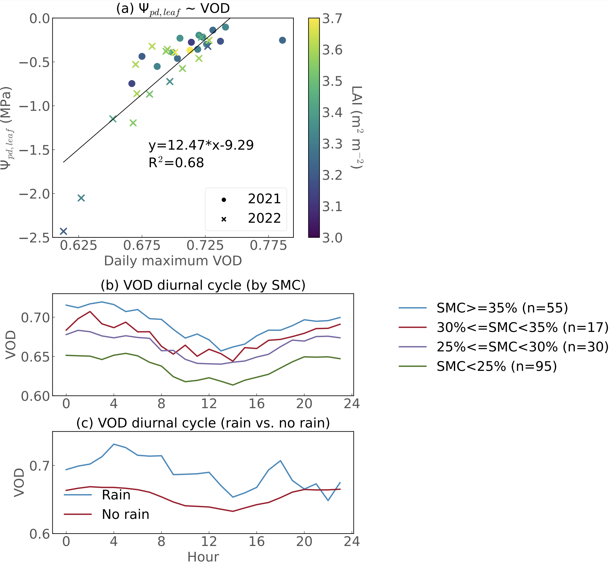

Forests play a crucial role in mitigating climate change by absorbing more than 20% of the anthropogenic carbon dioxide emission. However, such an absorption is constrained by forest water content, owing to the carbon-water nexus. Continuous monitoring of forest water content is important as it changes dramatically across diurnal to seasonal scales, which is not feasible with traditional labor-intensive approaches. Spaceborne satellite products of Vegetation Optical Depth (VOD), an emerging plant water content metric, only offer observations at two times of the day, which still fails to capture the variations of water content over the course of the day. To address this issue, we recently developed a new method of monitoring plant water content with a sub-hourly resolution using the Global Navigation Satellite System (GNSS). It measures the signal attenuation of GNSS L-band microwave signals by water in the forest canopy by deploying a pair of signal receivers above and below the trees, which is similar to the differential positioning technique. For the first time, we can capture the diurnal variation of plant water content, and it does not require any expensive instruments. This technology offers a low-cost, robust, and high-temporally resolved solution of obtaining plant water dynamics, which potentially has implications for agriculture, ecology, and environmental science, and is particularly significant to the pursuit of carbon neutrality goals. This work has been published in the Geophysical Research Letters (doi: 10.1029/2023GL107121).
Seasonal variations
VOD seasonal variations reflect the phenology of leaf flushing and leaf shedding. During the soil drydown period, the VOD decrease aligns with soil drying (yellow shading area). Rainfall pulses can be inferred from VOD spikes. Given the strong positive relationship between daily maximum VOD and predawn leaf water potential, using GNSS VOD as a proxy for monitoring leaf water potential offers a promising avenue that requires less labor-intensive methods.
data =FileAttachment("data/gnss_data_2021.csv").csv({ typed:true })
start =newDate(2021,4)end =newDate(2021,12)
viewof slider =rangeSlider({min:0,max: d3.timeDay.count(start, end),step:1,format: d =>formatDate(d3.timeDay.offset(start, d)),title:'Pick a date range'})
import { rangeSlider as rangeSlider } from'@mootari/range-slider'
formatDate = d3.timeFormat("%Y-%m-%d")
yMin = d3.min(filtered, d => d.mean_vod);// Get the minimum value of the 'average' fieldyMax = d3.max(filtered, d => d.mean_vod);
functionadjustTextPosition(plotDomain, fixedDate, defaultPosition) {if (fixedDate < plotDomain[0] || fixedDate > plotDomain[1]) {// Adjust the position to be within the domain// For example, set it to the start or end of the domainreturn plotDomain[0];// or plotDomain[1] }return defaultPosition;}
Plot.plot({ width,inset:10,height:400,marginLeft:80,y: {grid:true,label:" VOD",domain: [yMin, yMax] // Set the y-axis domain },x: {grid:true,label:"Time",dx:10,domain: [d3.min(filtered, d => d.Time), d3.max(filtered, d => d.Time)] // Set the y-axis domain },color: { legend:true },style: { fontSize:"22px",},marks: [ Plot.rectY([{}], { x1:newDate("2021-07-01"),// lower x bound of your overlayx2:newDate("2021-09-01"),// upper x bound of your overlayy1: yMin,y2: yMax,fill:"yellow",// color of the overlayfillOpacity:0.1 }), Plot.lineY(filtered, {x:"Time",y:"mean_vod",title: (d) =>`${formatDate(d.Time)}\n VOD: ${d.mean_vod}`,// \n makes a new linestroke:"red"}), ]})
yMin_2 = d3.min(filtered, d => d.moisture);// Get the minimum value of the 'average' fieldyMax_2 = d3.max(filtered, d => d.moisture);
Plot.plot({ width,height:400,marginLeft:80,y: {grid:true,label:" Soil moisture (m\u{00B3}/m\u{00B3})",ticks:5,domain: [yMin_2, yMax_2] // Set the y-axis domain },x: {grid:true,label:"Time",domain: [d3.min(filtered, d => d.Time), d3.max(filtered, d => d.Time)] // Set the y-axis domain },color: { legend:true },style: { fontSize:"22px",},marks: [ Plot.rectY([{}], { x1:newDate("2021-07-01"),// lower x bound of your overlayx2:newDate("2021-09-01"),// upper x bound of your overlayy1: yMin_2,y2: yMax_2,fill:"yellow",// color of the overlayfillOpacity:0.1 }), Plot.lineY(filtered, {x:"Time",y:"moisture",title: (d) =>`${formatDate(d.Time)}\n Soil moisture: ${d.moisture}`,// \n makes a new linestroke:"red"}), ]})
yMin_3 = d3.min(filtered, d => d.rain);// Get the minimum value of the 'average' fieldyMax_3 = d3.max(filtered, d => d.rain);
Plot.plot({ width,height:400,marginLeft:80,y: {grid:true,label:" Rainfall (mm)",domain: [yMin_3, yMax_3],// Set the y-axis domain },x: {grid:true,label:"Time",domain: [d3.min(filtered, d => d.Time), d3.max(filtered, d => d.Time)] // Set the y-axis domain },style: { fontSize:"22px",},marks: [ Plot.rectY([{}], { x1:newDate("2021-07-01"),// lower x bound of your overlayx2:newDate("2021-09-01"),// upper x bound of your overlayy1: yMin_3,y2: yMax_3,fill:"yellow",// color of the overlayfillOpacity:0.1 }), Plot.lineY(filtered, {x:"Time",y:"rain",title: (d) =>`${formatDate(d.Time)}\n Rainfall: ${d.rain}`,// \n makes a new linestroke:"red"}), ]})
import {Plot} from"@mkfreeman/plot-tooltip"
Diurnal variations
A typical diurnal VOD cycle reveals higher values in the morning and evening, and lower values around noon. This is due to soil moisture rehydration in the nighttime and plant transpiration in the daytime. We then employed Singular Value Decomposition (SVD) to identify the primary modes of GNSS VOD diurnal variability. The VOD diurnal amplitude is influenced by soil moisture, plant transpiration and leaf surface water dynamics.

ET estimation
Since VOD diurnal amplitude is modulated by plant transpiration, VOD principal components can be further used to reconstruct plant transpiration.
Summary
The use of continuous GNSS-based VOD monitoring emerges as an effective strategy for addressing the information gap pertaining to water potential. We recommend more deployments of these promising, lower-cost yet robust instruments at existing flux tower sites. This will provide complementary measurements to assess carbon and water fluxes, effectively bridging the gap in our understanding of vegetation water content and its temporal dynamics. Such VOD observations are at the same temporal resolutions as flux measurements and align well with the flux footprint.
Source Code
---title: "Monitoring Forest Water Content Using GPS Signals"author: "Yitong Yao"date: "03/19/2024"image: "figures/Figure2_small.jpg"comments: falsepage-layout: fullformat: html: margin-top: 0em margin-bottom: 0em smooth-scroll: true fig-responsive: true toc: false echo: false keep-hidden: true code-tools: truecategories: - Remote Sensing - Vegetation Optical Depth - Plant water content - Diurnal variations---Forests play a crucial role in mitigating climate change by absorbing more than 20% of the anthropogenic carbon dioxide emission. However, such an absorption is constrained by forest water content, owing to the carbon-water nexus. Continuous monitoring of forest water content is important as it changes dramatically across diurnal to seasonal scales, which is not feasible with traditional labor-intensive approaches. Spaceborne satellite products of Vegetation Optical Depth (VOD), an emerging plant water content metric, only offer observations at two times of the day, which still fails to capture the variations of water content over the course of the day. To address this issue, we recently developed a new method of monitoring plant water content with a sub-hourly resolution using the Global Navigation Satellite System (GNSS). It measures the signal attenuation of GNSS L-band microwave signals by water in the forest canopy by deploying a pair of signal receivers above and below the trees, which is similar to the differential positioning technique. For the first time, we can capture the diurnal variation of plant water content, and it does not require any expensive instruments. This technology offers a low-cost, robust, and high-temporally resolved solution of obtaining plant water dynamics, which potentially has implications for agriculture, ecology, and environmental science, and is particularly significant to the pursuit of carbon neutrality goals. This work has been published in the Geophysical Research Letters ([doi: 10.1029/2023GL107121](https://agupubs.onlinelibrary.wiley.com/doi/10.1029/2023GL107121)). ## Seasonal variationsVOD seasonal variations reflect the phenology of leaf flushing and leaf shedding. During the soil drydown period, the VOD decrease aligns with soil drying (yellow shading area). Rainfall pulses can be inferred from VOD spikes. Given the strong positive relationship between daily maximum VOD and predawn leaf water potential, using GNSS VOD as a proxy for monitoring leaf water potential offers a promising avenue that requires less labor-intensive methods. ```{ojs}data = FileAttachment("data/gnss_data_2021.csv").csv({ typed: true })``````{ojs}start = new Date(2021, 4)end = new Date(2021, 12)``````{ojs}viewof slider = rangeSlider({ min: 0, max: d3.timeDay.count(start, end), step: 1, format: d => formatDate(d3.timeDay.offset(start, d)), title: 'Pick a date range'})``````{ojs}startDate = d3.timeDay.offset(start, slider[0])stopDate = d3.timeDay.offset(start, slider[1]) ``````{ojs}filtered = data.filter(function(s2) { return s2.Time >= startDate && s2.Time <= stopDate;})``````{ojs}import { rangeSlider as rangeSlider } from '@mootari/range-slider'``````{ojs}formatDate = d3.timeFormat("%Y-%m-%d")``````{ojs}// Assuming 'filtered' is your datasetyMin = d3.min(filtered, d => d.mean_vod); // Get the minimum value of the 'average' fieldyMax = d3.max(filtered, d => d.mean_vod);``````{ojs}function adjustTextPosition(plotDomain, fixedDate, defaultPosition) { if (fixedDate < plotDomain[0] || fixedDate > plotDomain[1]) { // Adjust the position to be within the domain // For example, set it to the start or end of the domain return plotDomain[0]; // or plotDomain[1] } return defaultPosition;}``````{ojs}Plot.plot({ width, inset: 10, height: 400, marginLeft: 80, y: { grid: true, label: " VOD", domain: [yMin, yMax] // Set the y-axis domain }, x: { grid: true, label: "Time", dx: 10, domain: [d3.min(filtered, d => d.Time), d3.max(filtered, d => d.Time)] // Set the y-axis domain }, color: { legend: true }, style: { fontSize: "22px",}, marks: [ Plot.rectY([{}], { x1: new Date("2021-07-01"), // lower x bound of your overlay x2: new Date("2021-09-01"), // upper x bound of your overlay y1: yMin, y2: yMax, fill: "yellow", // color of the overlay fillOpacity: 0.1 }), Plot.lineY(filtered, {x: "Time", y: "mean_vod", title: (d) => `${formatDate(d.Time)} \n VOD: ${d.mean_vod}`, // \n makes a new line stroke: "red"}), ]})```<br>```{ojs}// Assuming 'filtered' is your datasetyMin_2 = d3.min(filtered, d => d.moisture); // Get the minimum value of the 'average' fieldyMax_2 = d3.max(filtered, d => d.moisture);``````{ojs}Plot.plot({ width, height: 400, marginLeft: 80, y: { grid: true, label: " Soil moisture (m\u{00B3}/m\u{00B3})", ticks: 5, domain: [yMin_2, yMax_2] // Set the y-axis domain }, x: { grid: true, label: "Time", domain: [d3.min(filtered, d => d.Time), d3.max(filtered, d => d.Time)] // Set the y-axis domain }, color: { legend: true }, style: { fontSize: "22px",}, marks: [ Plot.rectY([{}], { x1: new Date("2021-07-01"), // lower x bound of your overlay x2: new Date("2021-09-01"), // upper x bound of your overlay y1: yMin_2, y2: yMax_2, fill: "yellow", // color of the overlay fillOpacity: 0.1 }), Plot.lineY(filtered, {x: "Time", y: "moisture", title: (d) => `${formatDate(d.Time)} \n Soil moisture: ${d.moisture}`, // \n makes a new line stroke: "red"}), ]})```<br>```{ojs}// Assuming 'filtered' is your datasetyMin_3 = d3.min(filtered, d => d.rain); // Get the minimum value of the 'average' fieldyMax_3 = d3.max(filtered, d => d.rain);``````{ojs}Plot.plot({ width, height: 400, marginLeft: 80, y: { grid: true, label: " Rainfall (mm)", domain: [yMin_3, yMax_3], // Set the y-axis domain }, x: { grid: true, label: "Time", domain: [d3.min(filtered, d => d.Time), d3.max(filtered, d => d.Time)] // Set the y-axis domain }, style: { fontSize: "22px",}, marks: [ Plot.rectY([{}], { x1: new Date("2021-07-01"), // lower x bound of your overlay x2: new Date("2021-09-01"), // upper x bound of your overlay y1: yMin_3, y2: yMax_3, fill: "yellow", // color of the overlay fillOpacity: 0.1 }), Plot.lineY(filtered, {x: "Time", y: "rain", title: (d) => `${formatDate(d.Time)} \n Rainfall: ${d.rain}`, // \n makes a new line stroke: "red"}), ]})``````{ojs}import {Plot} from "@mkfreeman/plot-tooltip"```## Diurnal variations A typical diurnal VOD cycle reveals higher values in the morning and evening, and lower values around noon. This is due to soil moisture rehydration in the nighttime and plant transpiration in the daytime. We then employed Singular Value Decomposition (SVD) to identify the primary modes of GNSS VOD diurnal variability. The VOD diurnal amplitude is influenced by soil moisture, plant transpiration and leaf surface water dynamics. <br>## ET estimation Since VOD diurnal amplitude is modulated by plant transpiration, VOD principal components can be further used to reconstruct plant transpiration. ## Summary The use of continuous GNSS-based VOD monitoring emerges as an effective strategy for addressing the information gap pertaining to water potential. We recommend more deployments of these promising, lower-cost yet robust instruments at existing flux tower sites. This will provide complementary measurements to assess carbon and water fluxes, effectively bridging the gap in our understanding of vegetation water content and its temporal dynamics. Such VOD observations are at the same temporal resolutions as flux measurements and align well with the flux footprint.